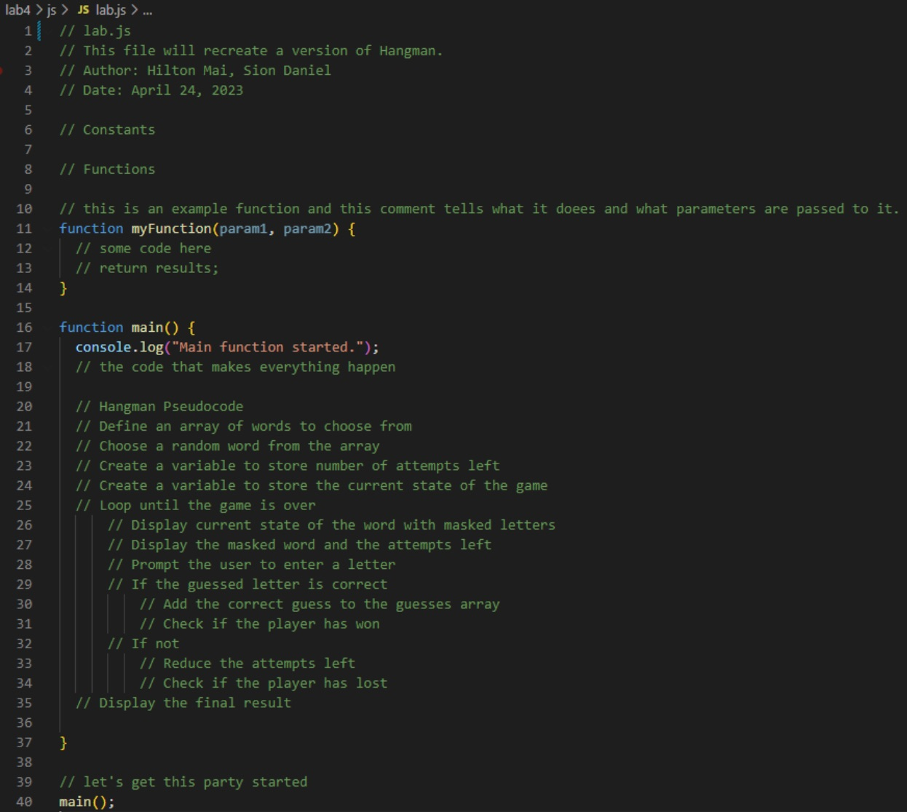

Lab 4 - Pseudocode and Problem Solving
Challenge
The challenge of the lab was to devise pseudocode to solve a problem.
Problems
The major problem we had when doing this assignment was thinking of pseudo code for recreating Hangman. We knew how to play the game on paper and had a general idea of how we could code it, but abstracting our ideas into English was somewhat difficult. It is easy to understand what we want to do, but in creating pseudocode/ comments, you want to create something that is easy to understand and recreate by others. We decided to consult ChatGPT to aid us in making our game easy to understand.
Reflection
Despite the pseudocode for creating a computer game being somewhat of an issue, this lab was pretty straightforward for the most part. The tasks were pretty simple to understand and do.
Results
Everyday Task - Getting to School Every Morning
- Set an alarm before going to bed.
- Wake up and get out of bed.
- If needed or desired, shower and brush teeth.
- Get out of the house.
- Go to the nearest bus stop that takes you to school and wait for the next bus.
- Take the bus when it comes.
- Get off at the stop closest to your first class.
- Finally, walk to the classroom.
Pseudocode a Simple Computer Game - Hangman
// Hangman Pseudocode - provided by ChatGPT
// Define an array of words to choose from
// Choose a random word from the array
// Create a variable to store number of attempts left
// Create a variable to store the current state of the game
// Loop until the game is over
// Display current state of the word with masked letters
// Display the masked word and the attempts left
// Prompt the user to enter a letter
// If the guessed letter is correct
// Add the correct guess to the guesses array
// Check if the player has won
// If not
// Reduce the attempts left
// Check if the player has lost
// Display the final result